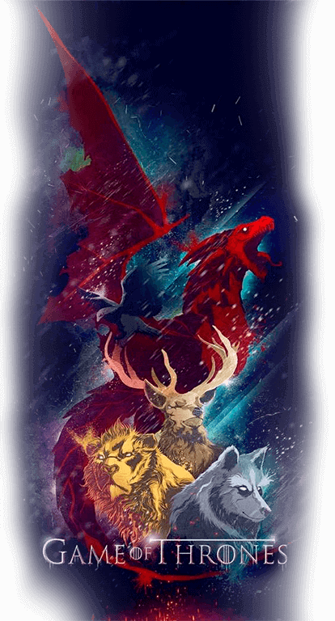

Redimensiona la ventana para saber la historia
de las tres principales casas de Poniente

HOUSE
LANNISTER
Words: Hear me roar
Seat: Casterly Rock
Religion: Faith of the Seven
House Lannister of Casterly Rock is one of the Great Houses of Westeros, one of its richest and most powerful families and oldest dynasties. It is also the current royal house of the Seven Kingdoms following the extinction of House Baratheon of King's Landing, which had been their puppet house anyway.
HOUSE
TARGARYEN
Words: Fire and blood
Seat: Red Keep
Religion: Bay of Dragons
House Targaryen is a former Great House of Westeros and was the ruling royal House of the Seven Kingdoms for three centuries since it conquered and unified the realm, before it was deposed during Robert's Rebellion and House Baratheon replaced it as the new royal House. The few surviving Targaryens fled into exile to the Free Cities of Essos across the Narrow Sea. Currently based on Dragonstone off of the eastern coast of Westeros, House Targaryen seeks to retake the Seven Kingdoms from House Lannister, who formally replaced House Baratheon as the royal House following the destruction of the Great Sept of Baelor.
HOUSE
STARK
Words: Winter is Coming
Seat: Winterfell
Religion: Old Gods of the Forest
House Stark of Winterfell is a Great House of Westeros, ruling over the vast region known as the North and the Vale as Kings in the North from their seat in Winterfell, recently retaken by the Starks from House Bolton. It is by far one of the oldest lines of Westerosi nobility, claiming a line of descent stretching back over eight thousand years. The head of the house is the Lord of Winterfell. Before the Targaryen conquest, the leaders of House Stark ruled over the region as the Kings in the North. Jon Snow is the current King in the North and the Vale, partially due to the allegiance of Petyr Baelish, the Lord Regent of the Vale, to House Stark.